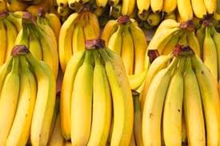

tentangbuah.com
Pisang

Pisang adalah nama umum yang diberikan pada tumbuhan terna raksasa berdaun besar memanjang dari suku Musaceae. Beberapa jenisnya (Musa acuminata, M. balbisiana, dan M. ×paradisiaca) menghasilkan buah konsumsi yang dinamakan sama. Buah ini tersusun dalam tandan dengan kelompok-kelompok tersusun menjari yang disebut sisir. Hampir semua buah pisang memiliki kulit berwarna kuning ketika matang, meskipun ada beberapa yang berwarna jingga, merah, hijau, ungu, atau bahkan hampir hitam. Buah pisang sebagai bahan pangan merupakan sumber energi (karbohidrat) dan mineral, terutama kalium.
Perlu disadari, istilah "pisang" juga dipakai untuk sejumlah jenis yang tidak menghasilkan buah konsumsi, seperti pisang abaka, pisang hias, dan pisang kipas. Artikel ini hanya membahas pisang penghasil buah konsumsi serta kerabatnya yang berkaitan.
Khasiat Pisang
- Membantu Atasi Hipertensi
- Sumber Karbohidrat dan Vitamin A
- Meningkatkan Kekebalan Tubuh
- Melancarkan Aliran Oksigen ke Otak
- Pisang Perlancar Metabolisme
- Mengatasi Anemia
- Menurunkan Berat Badan
- Menyehatkan Tulang
Daftar Harga
| Jenis Apel | Harga | |
|---|---|---|
| Per Kilo | Per Biji | |
| Pisang Ambon | 13.500 | - |
| Pisang Cavendish | 16.000 | - |
| Pisang Susu | 25.000 | - |
| Apel Merah | 20.000 | - |